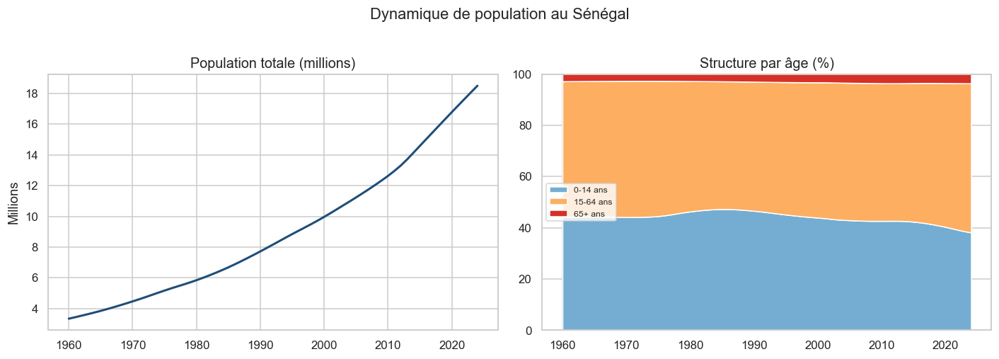
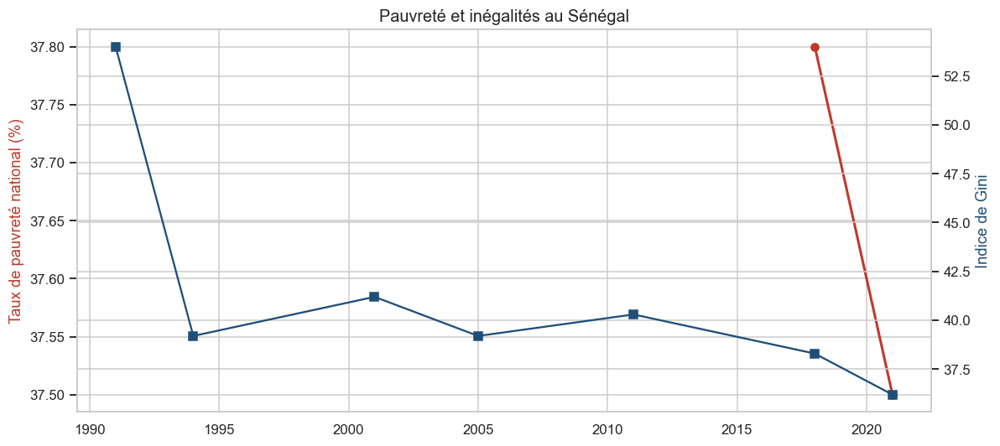
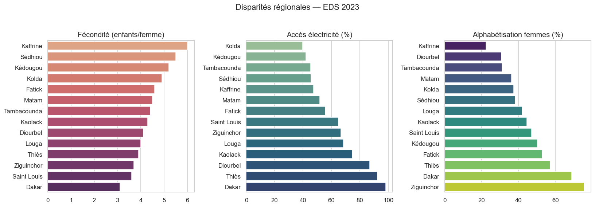
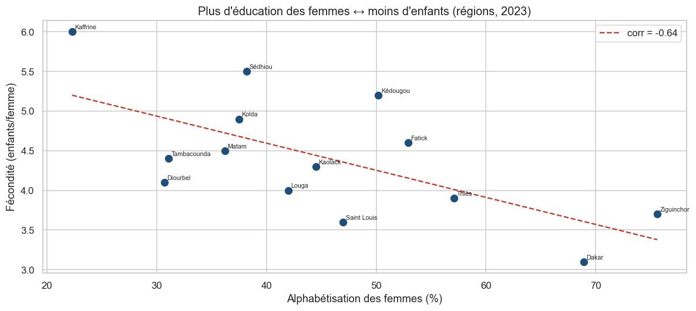

Projet Data Analytics sur données 100 % réelles : enquêtes EDS/DHS (avec l'ANSD) et Banque mondiale — transition démographique, santé, pauvreté et disparités régionales (1986–2023).
Indicateurs officiels EDS/DHS & Banque mondiale.
scripts/download_data.py. Les microdonnées
EHCVM/RGPH (inscription requise) ne sont pas utilisées directement.
Graphiques alimentés par les données réelles du projet.
Indice synthétique de fécondité (enfants/femme), EDS.
Décès pour 1 000 naissances vivantes (EDS).
Enfants/femme.
Millions d'habitants (Banque mondiale + projection au taux récent).
Cartes choroplèthes réelles des 14 régions.



